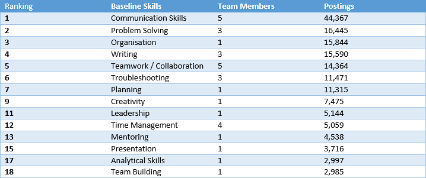
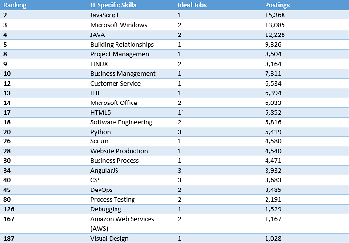
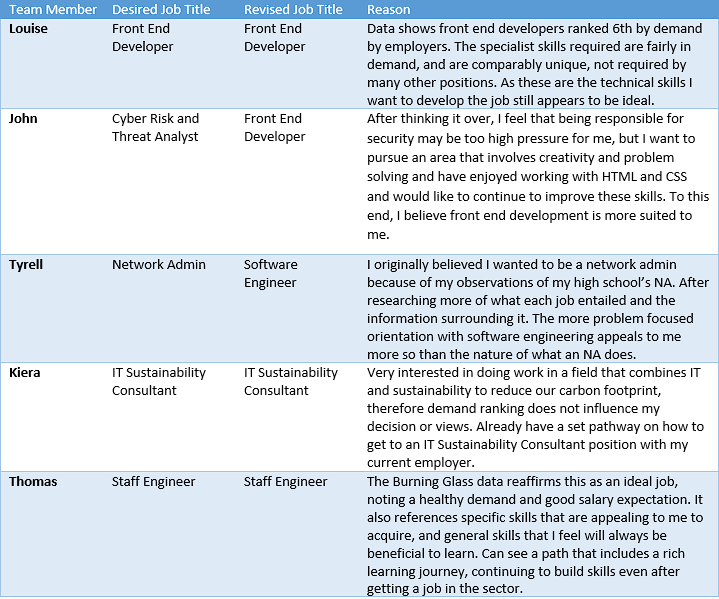

FW: Thinkers Titles & Demand Rankings

FW: Thinkers Required Skill Set & Analysis

Baseline Skills
The baseline skills for the FW: Thinkers are more universal and highly desired, with all items in the required skill set appearing in the top 20 of demand. The highest ranked, communication skills, is one of two skills required by all 5 ideal jobs, the other being teamwork and collaboration.
IT Specific Skills
The FW: Thinkers have a wide range of specialised skills within their required skill set, the most popular being Python, AngularJS and CSS, which are each shared between 3 different ideal jobs. The skill with the highest demand ranking is JavaScript, which ranks 2nd, and is only required by one ideal job. The required specialised skills are spread across the top 200 desired skills.
The Burning Glass Data ranks these skills based on number of postings requiring the skills in a year-long period from 2017-2018. The highest ranked skills not required by the FW: Thinkers ideal jobs, are listed below.


FW: Thinkers Ideal Job Re-Evauations
The FW: Thinkers have evaluated the Burning Glass data and revised their Ideal Jobs as follows:
